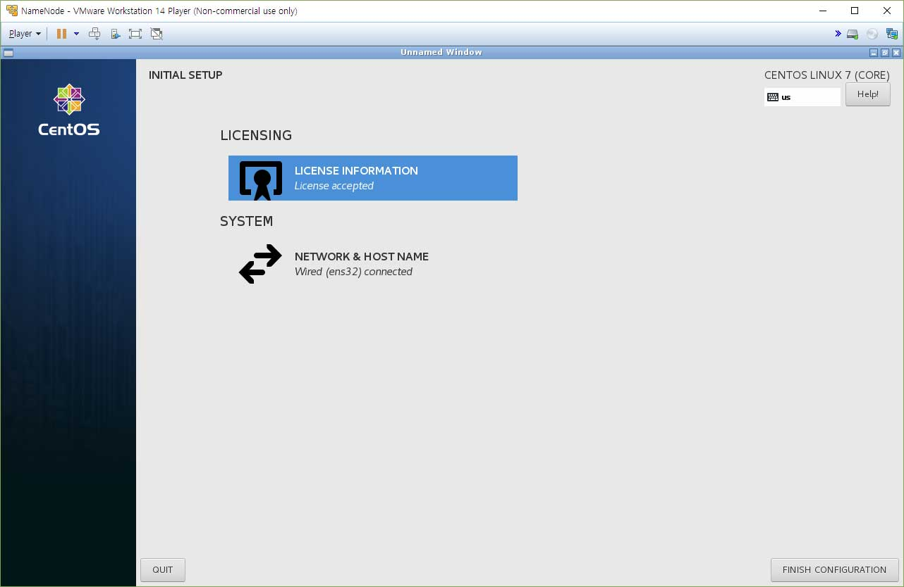
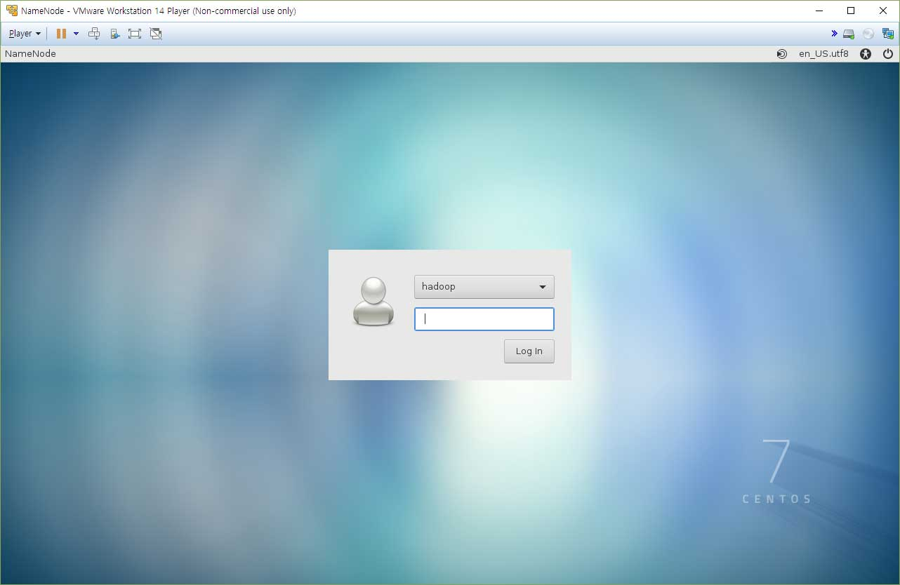

보통은 sudo yum groupinstall -y "Server with GUI"로 설치하거나 애초에 GUI설치를 하시겠지만
저번 글에 언급했듯이 그렇게 하면 GNOME이 설치되고 무겁고 버벅거리고 부팅과 종료가 느려지게 됩니다.
불필요한것만 빼고 필요한 것만 설치하기 위함입니다. 가벼운걸로 쓰겠다 하시면 XFCE가 더 낫지만,
저는 Cinnamon을 설치하겠습니다. 예쁘거든요.
--Cinnamon 대신 MATE를 설치하도록 하겠습니다.
설치가 원활하게 진행이 안되네요...
[
hadoop@
NameNode ~]$
sudo yum install -y epel-release
[
hadoop@
NameNode ~]$
sudo yum groupinstall -y "X Window System"
[
hadoop@
NameNode ~]$
sudo yum groupinfo "MATE Desktop"
[
hadoop@
NameNode ~]$
sudo yum groupinstall -y "MATE Desktop"
[
hadoop@
NameNode ~]$
sudo systemctl set-default graphical.target
Removed symlink /etc/systemd/system/default.target.
Created symlink from /etc/systemd/system/default.target to /usr/lib/systemd/system/graphical.target.
[
hadoop@
NameNode ~]$
sudo systemctl isolate graphical.target

GUI환경으로 들어오면 맨 처음 마주치는 익숙한 라이센스 동의 화면이 나옵니다. 동의하고 넘어가면

로그인 화면이 나옵니다.
이렇게 하면 불필요한 것 없이 딱 MATE환경으로 구축된 GUI환경을 보실 수 있습니다.
불필요한게 없지만 필요한것도 없는건 함정...
일단 vmware tool부터 설치합니다.
간단합니다. vmware tool CD를 인식시킨 후에 재부팅만 하면 됩니다. (이렇게 간단하다니?!)
자... 그럼 전 아까 cinnamon설치하다 한번 날려먹었기땜에 한번 다시 기본세팅 하고 시작하겠습니다.
그럼 그 다음은 다음 글에 진행하겠습니다.
아, 참. GUI환경은 네임노드에만 설치하시면 됩니다. 다른데에는 그냥 CLI환경으로 써도 돼요.
다음 글 보기